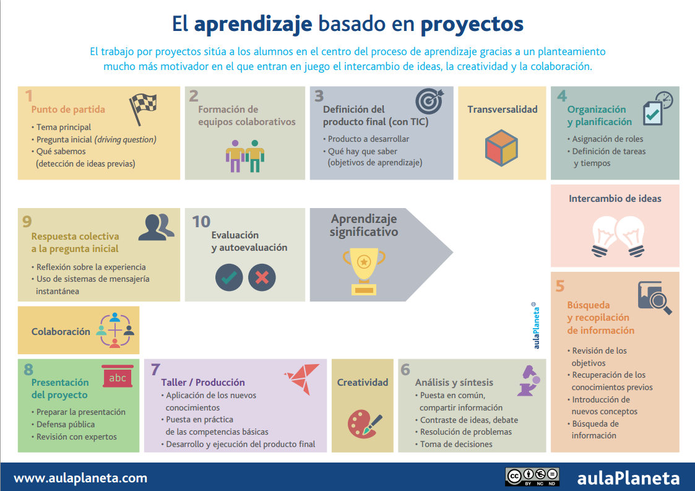

Cómo aplicar el ABP paso a paso

Diseño de la pregunta guía (driving question):
El Aprendizaje Basado en Proyectos motiva a los alumnos, ya que es un uso auténtico de la tecnología, facilita el aprendizaje activo, el pensamiento crítico, la colaboración y la creatividad.
Los proyectos comienzan con una pregunta abierta que prepara el terreno creando interés y curiosidad. Escribir una pregunta guía eficaz es sorprendentemente difícil. Debe ser interesante e irresistible para los estudiantes, muy diferente a las típicas preguntas que se encuentran en los exámenes. Captura el corazón del proyecto utilizando un lenguaje claro y convincente, creando un propósito. Podríamos llamarla también el reto, el desafío inicial...
La pregunta guía debe expresar de forma sencilla un dilema del mundo real, uno que realmente importe a los alumnos y quieran resolver; ha de impulsar a los estudiantes a discutir, preguntar e investigar el tema; debe empujarlos hacia una producción o solución. En el proceso de investigación colaborativa los estudiantes aprenden contenidos y habilidades importantes.
Para plantear un pregunta guía se puede utilizar el objeto de interés de los estudiantes como punto de partida y luego conectarlo creativamente a los estándares de aprendizaje. Aunque también puede hacerse al revés, desarrollar la pregunta guía determinando primero los estándares de aprendizaje que se van a trabajar. Al final, lo importante es que la pregunta debe exigir que los estudiantes aprendan habilidades y contenidos con el fin de responder a una pregunta interesante para ellos.
Al diseñar las preguntas guía se debe procurar que tengan las siguientes características:
- Sean provocativas, para mantener a los alumnos interesados y motivados durante todo el proyecto.
- Desarrollen habilidades cognitivas superiores, que impliquen integrar, sintetizar, criticar y evaluar información.
- Promuevan un mayor conocimiento de la materia. Los alumnos deben discutir y debatir aspectos controvertidos.
- Representen un reto y alienten a los alumnos a confrontar cuestiones poco familiares o comunes.
- Se extraigan de situaciones o problemáticas reales que sean interesantes en el mundo de los alumnos. De esta manera, se les alienta a analizar el mundo que los rodea y a participar en la mejora de su comunidad y de la sociedad en general.
- Sean consistentes con los estándares curriculares. No es suficiente que la pregunta sea atractiva, es necesario además que lleve a los alumnos a desarrollar las habilidades y conocimientos definidos.
- Sean alcanzables, es decir, debe ser posible alcanzar una solución en forma de producto o servicio.
Trabajar en equipo
Los alumnos deben organizarse en grupos de tres o cuatro, procurando que haya diversidad de perfiles con el fin de que cada uno pueda desempeñar un rol diferente y ajustado a su estilo de aprendizaje. En el blog de Merche Martín @merche70, creadora del blog laclasedemerche, se han realizado unas fantásticas infografías sobre normas y roles en el trabajo colaborativo (aunque ella lo denomina cooperativo):
Definir el producto final
El ABP es una metodología que fomenta el aprender haciendo. Haciendo ¿qué? Un producto final, ya sea éste bien algo "material" bien un servicio. Cuando alguien le pregunte a un alumno ¿qué estáis haciendo en clase? La respuesta nunca debe ser "un glogster", "un blog"... sino "Una campaña de concienciación sobre la importancia de lavarse las manos, mediante folletos", "Un documental sobre la presencia de las matemáticas en el arte", "Una solución al problema de la acumulación de basuras a la entrada del pueblo". Hablamos de productos, no de formatos.
Estándares de aprendizaje
El producto final de un proyecto puede tener distintos formatos: un folleto, una campaña, una presentación, una investigación científica, una maqueta… Para definir el producto final que han de crear los alumnos deberás tener en cuenta las competencias y estándares de aprendizaje que van a desarrollarse.
Organización y planificación
Alumnos y profesores deben presentar un plan de trabajo donde especifiquen las tareas previstas, los encargados de cada una y el calendario para realizarlas.
Investigación
Dentro de un proyecto se debe dar autonomía a los alumnos (voz y voto que decíamos en la sección de 8 elementos esenciales para el ABP) para que busquen, contrasten y analicen la información que necesitan para llevar a cabo el proyecto. El papel del docente es el de orientarles y guiarles, acotando o centrando la búsqueda cuando sea necesario.
Ahora bien, ¿cómo guardar lo encontrado en la Red?¿cómo participar colaborativamente en una investigación?
Utiliza las herramientas TIC que pueden ayudarte en la gestión colaborativa de recursos de aprendizaje: marcadores (favoritos) sociales, que permiten "guardar" enlaces interesantes entre varios participantes de un grupo, como Symbaloo, Pinterest, Diigo, Listly. También servicios donde colgar ficheros, vídeos, fotos, para que todos los miembros del equipo de trabajo los tengan disponibles, como Mega, Dropbox, etc..
Presentación del proyecto y difusión
Los alumnos deben exponer públicamente lo que han aprendido y mostrar cómo han dado respuesta a la pregunta guía. En un proyecto bien planteado el producto final es abierto; para una misma pregunta algunos equipos habrán preparado un vídeo; otros, una campaña en las redes sociales; y otros, una maqueta física que responda al problema que se les planteó en el lanzamiento del proyecto.
Es importante que el proyecto y sus resultados se muestren no sólo dentro de clase, sino ante una audiencia real que le dé sentido: el centro educativo, los expertos que ayudaron en la investigación, el barrio o pueblo para el que se desarrolla el producto, las familias, etc.
Por último, vivimos en una aldea global, aprendemos con y de otros gracias a Internet y las redes sociales. Difundir un proyecto, con sus éxitos y sus fracasos, ayudará a otros a cambiar la metodología del aula para hacer el proceso de aprendizaje más efectivo y satisfactorio para todos.
Evaluación y reflexión sobre lo aprendido
La evaluación es un tema fundamental dentro del ABP. No sólo se debe evaluar el resultado, el producto final, sino el proceso hasta llegar a él. Se debe evaluar en qué grado se han adquirido los objetivos de aprendizaje y las competencias para las que se diseñó el proyecto; y cómo se ha desarrollado el trabajo colaborativo.
La autoevaluación y la evaluación entre iguales ayudan los alumnos a desarrollar su espíritu de autocrítica y a reflexionar sobre sus fallos o errores. Más importante aún, la evaluación les enseña que el trabajo de calidad no sale a la primera ni es fruto de la genialidad o de la suerte, sino de un trabajo de refinamiento y revisión.

Curso para funcionariado en prácticas (0597) por varios autores bajo licencia Creative Commons Reconocimiento-NoComercial-CompartirIgual 4.0 Internacional License.